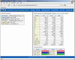

Welcome to the home of Krakatau Essential Project Manager |
 |
|


EPM is the multi-language metrics solution for measuring changed, added and deleted source lines of code The majority of organisations recognise the importance of managing and monitoring their considerable investment in developed source code. To do this they measure both the size and the changes to the project and its key components. This enables developers and managers to see if there is any unexpected or 'rogue' development or simply to compare the progress of development against the design and project plan. It also serves to indicate if any particular source components are being changed frequently and this may indicate a design or coding issue. |
 | |||
|  Multi-Language Projects  |
Very often this job is done manually, by an in-house developed utility that is not commercially supported or by a similarly unsupported freeware utility. PowerSoftware.com believes that this is not an ideal way to protect your investment in a source code project that may run into millions of pounds and so we have developed a single, professional product with full commercial support to achieve this task for you. We have called this product Essential Project Manager (EPM) because it’s an essential tool for source code Project Managers. EPM now features churn metrics, giving you the ability to tell at-a-glance how much change has occurred between two projects. Churn metrics include:
EPM is a command line (batch mode) utility and as such it can be integrated into your build process to automatically measure both the size of your source code and the number of "new, changed and deleted" lines of source code across the entire project and in each individual source file. Of course EPM also shows which files have been removed, added and deleted across the project as a whole. It does this by referencing the new version of the source code project against the previous or any other prior version of your project. |
 Changed SLOC Example View the User Guide Vista/MySQL User Guide Metrics Definitions Read Management Brief |
||
EPM operates at two levels. In single project (non-comparison) mode it simply provides, in a variety of reports for LOC, SLOC and related metrics (Halstead size metrics) for the project and for each file. In comparison mode it provides the "differences" and the "changes" in these metrics between the two versions of the project that you select. It is in this second, comparison, mode that you will see our unique "changed SLOC" metrics that are so useful in indicating the issues mentioned above. |
||||
In order for EPM to be a single, industry-standard, solution we have designed the product to support multiple languages and the number of supported languages is increasing frequently and rapidly. Of course the data produced by EPM must be given in a useful format and it is therefore provided in CSV, HTML and XML for your further collection, analysis and further processing. Please take the opportunity to download and test EPM on your source code today. |


|
|||

Metrics: Actual values
|
Metrics: Changed |
 | |||||||||||||||||||||||||||||||
| |||||||||||||||||||||||||||||||
|  | ||||||||||||||||||||||||||||||
| |||||||||||||||||||||||||||||||
| |||||||||||||||||||||||||||||||
| |||||||||||||||||||||||||||||||
| |||||||||||||||||||||||||||||||
12 Dec 2009
Copyright © 2009 PowerSoftware.com